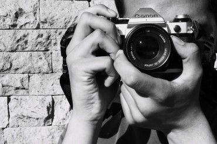
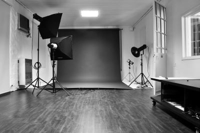
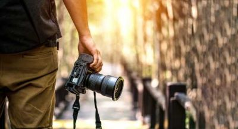
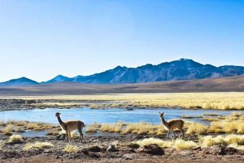

En la actualidad, la fotografía desempeña un papel importante como medio de información, como instrumento de la ciencia y la tecnología, como una forma de arte y una afición popular. Con ella podemos recoger momentos especiales y dejarlo fijos por mucho tiempo; ciencias como astronomía, física atómica, física nuclear, física cuántica, mecánica cuántica cuenta con la fotografía para sus estudios; y la prensa escrita se sirve de ella como medio informativo.
Arte y apertura
Fotografía profesional en cada una de tus ideas.
Ver galería




Nuestros servicios
| Producto | Duración | Servicios incluidos |
|---|---|---|
| Evento boda | Todo el día |
|